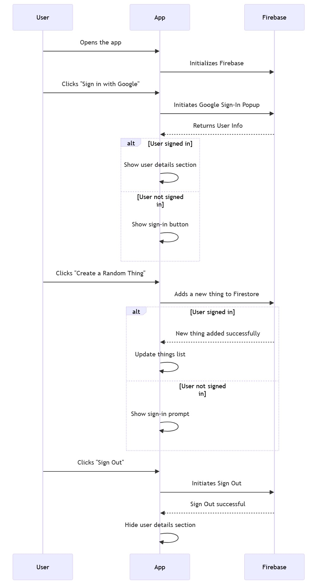
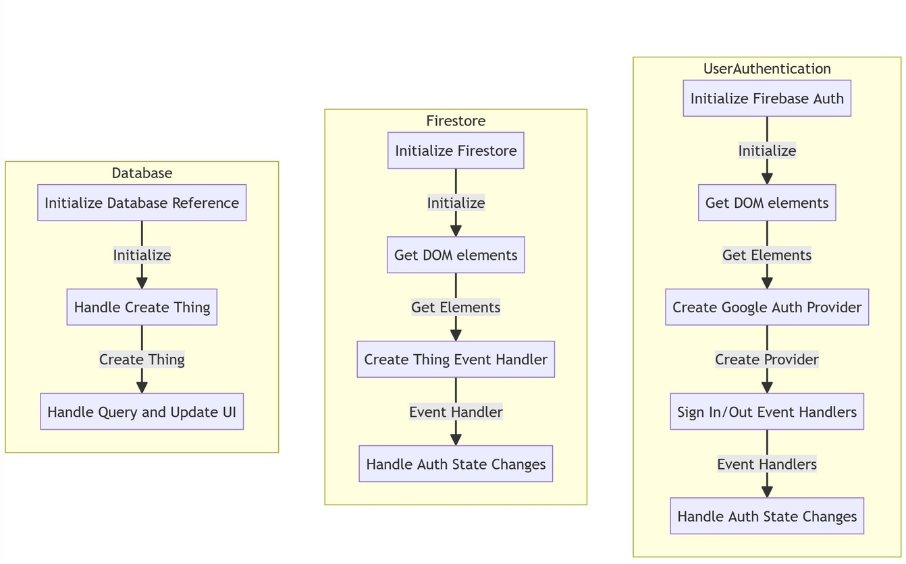

Firebase Login App Project
Project Summary
The project aimed to create a dynamic and engaging web application with user authentication and Firestore integration using Firebase. The focus was on providing users with a seamless experience, enabling them to log in with their Google accounts, create random "things," and view those things in real-time.
Technologies Used
- Firebase: Used for user authentication and Firestore database.
- JavaScript: Utilized for client-side scripting and interaction with Firebase SDK.
- HTML: Structured the layout and content of the web pages.
- CSS: Styled the application for a visually appealing user interface.
- Bootstrap: Integrated for responsive and aesthetically pleasing UI components.
- Faker.js: Employed for generating random "things" during testing.
Key Features
-
User Authentication:
sequenceDiagram participant User participant App participant Firebase User ->> App: Opens the app App ->> Firebase: Initializes Firebase User ->> App: Clicks "Sign in with Google" App ->> Firebase: Initiates Google Sign-In Popup Firebase -->> App: Returns User Info alt User signed in App ->> App: Show user details section else User not signed in App ->> App: Show sign-in button end User ->> App: Clicks "Create a Random Thing" App ->> Firebase: Adds a new thing to Firestore alt User signed in Firebase -->> App: New thing added successfully App ->> App: Update things list else User not signed in App ->> App: Show sign-in prompt end User ->> App: Clicks "Sign Out" App ->> Firebase: Initiates Sign Out Firebase -->> App: Sign Out successful App ->> App: Hide user details section -
Firestore Integration:
graph TD subgraph UserAuthentication A[Initialize Firebase Auth] B[Get DOM elements] C[Create Google Auth Provider] D[Sign In/Out Event Handlers] E[Handle Auth State Changes] A -->|Initialize| B B -->|Get Elements| C C -->|Create Provider| D D -->|Event Handlers| E end subgraph Firestore F[Initialize Firestore] G[Get DOM elements] H[Create Thing Event Handler] I[Handle Auth State Changes] F -->|Initialize| G G -->|Get Elements| H H -->|Event Handler| I end subgraph Database J[Initialize Database Reference] K[Handle Create Thing] L[Handle Query and Update UI] J -->|Initialize| K K -->|Create Thing| L end
Sequence Diagram Screenshot
Explore the authentication documentation for Firebase:
Firebase Authentication Documentation Firestore Integration Flowchart
Learn about Firestore integration in your Firebase project:
Firestore Documentation Methodologies
- Agile Development: Followed an agile development approach, allowing for iterative updates and improvements. Regularly reviewed and adjusted project goals based on ongoing development.
- Test-Driven Development (TDD): Conducted thorough testing of each feature during development. Ensured the application's robustness and reliability through continuous testing.
Findings
Firebase Provides Seamless Integration: Firebase proved to be a powerful backend solution for real-time data storage and retrieval. Integration with the Firebase SDK facilitated quick and efficient development.
Real-time Updates Enhance User Experience: Real-time updates provided a seamless and dynamic user experience. Users could see changes in the application as they occurred, enhancing engagement.
Conclusions
The project successfully demonstrated the integration of Firebase for user authentication and backend development.
Real-time updates provided a dynamic user experience, crucial for modern web applications.
Bootstrap and Faker.js contributed to the aesthetics and functionality of the application.
Future Improvements
- Explore additional Firebase features, such as Firebase Hosting for deploying the web application.
- Enhance security features and user profile management.
- Implement user-specific permissions for data access.